Native TreeSHAP • July–Dec 2025 sample n=1,800 • Additivity error 8.39233e-05 ERC
Interpretation: ERC-G is a fuel-moisture-related potential heat release index, not wildfire ignition probability or spread rate. SHAP indicates model attribution, not causal effects.
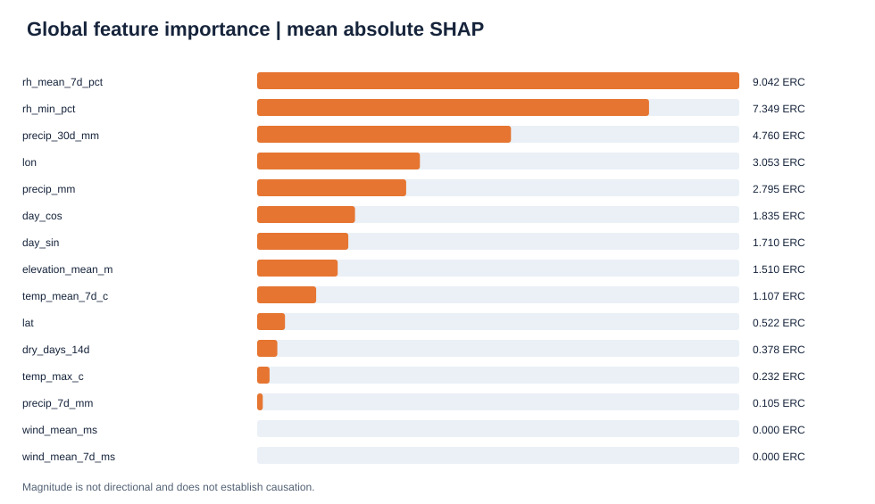
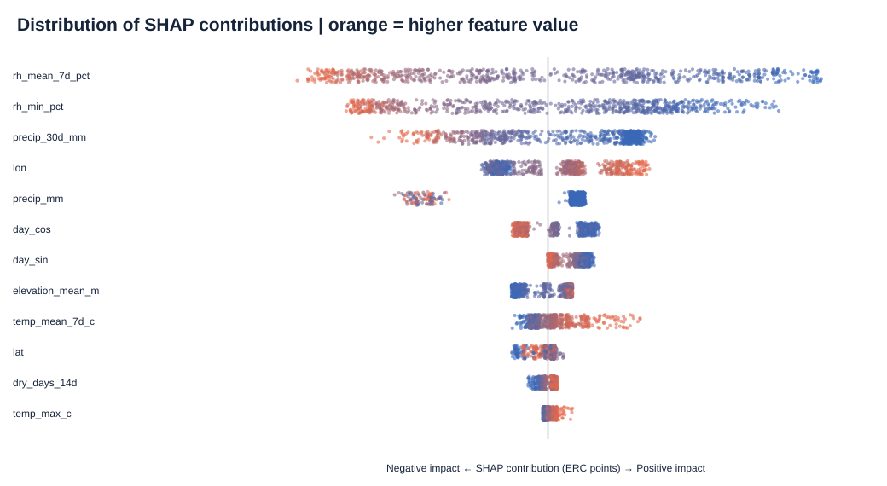
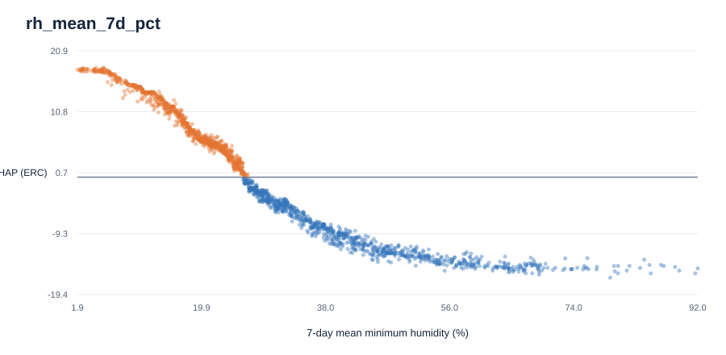
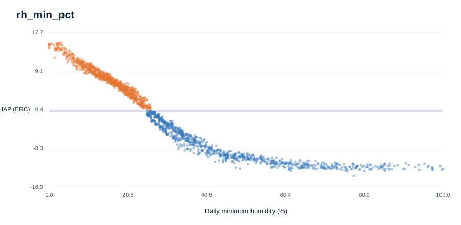
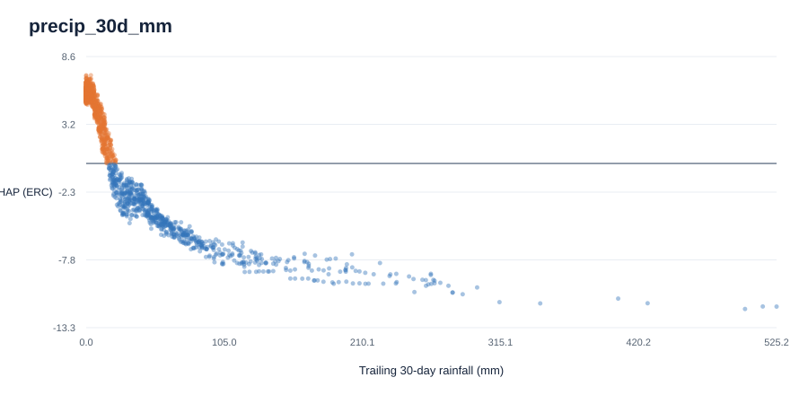
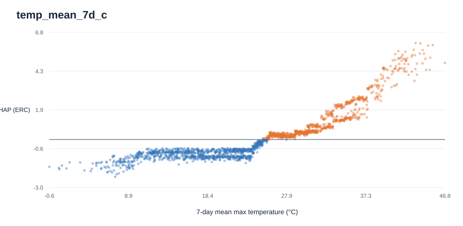
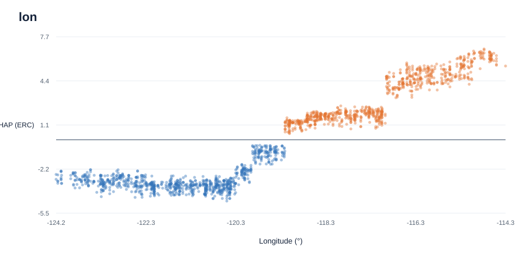
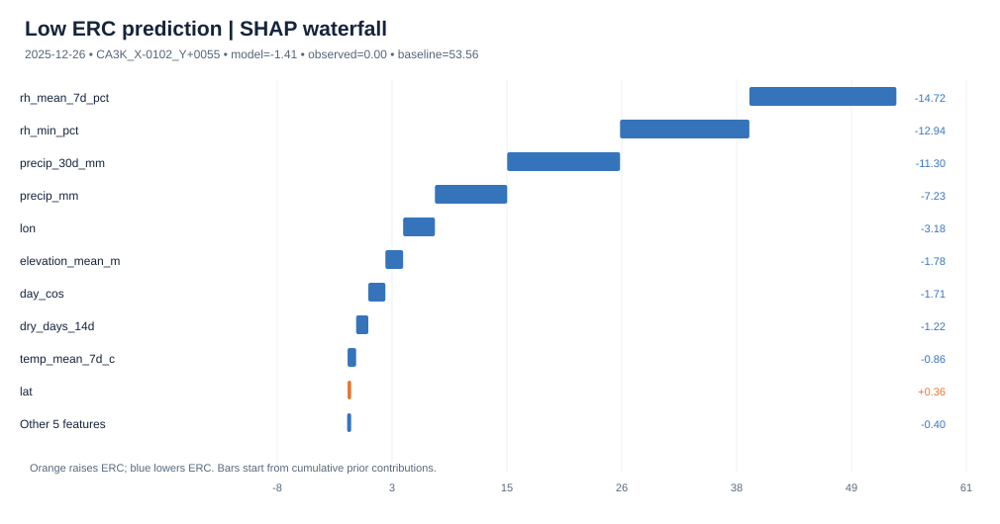
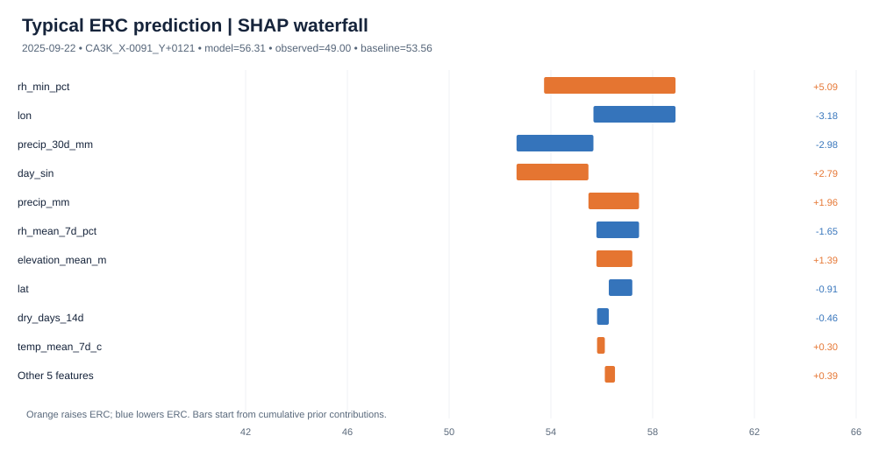
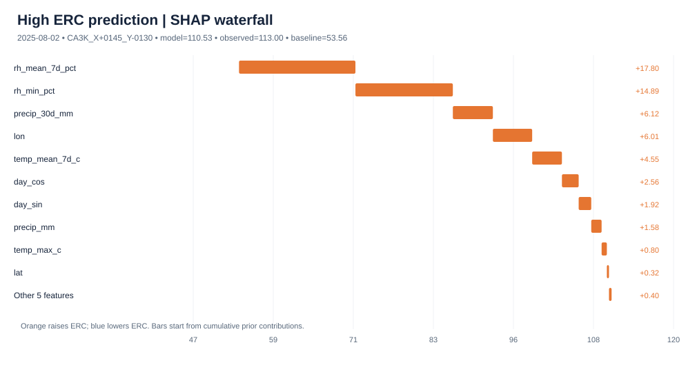
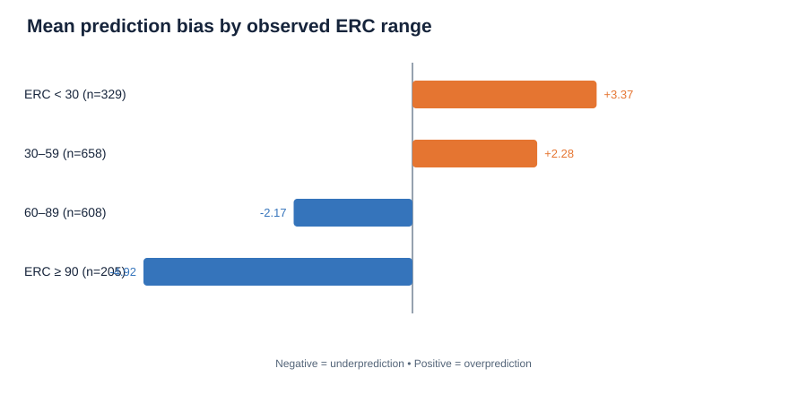
NWCG: ERC increases as fuels dry; ERC does not use wind speed directly. The gridMET ERC product uses Fuel Model G. High humidity and recent precipitation generally increase fuel moisture and can reduce ERC.
Sources: NWCG fire danger · Wildfire.gov ERC · gridMET · NWCG weather & fuel moisture
Model SHAP cannot validate wildfire occurrences. Correlated inputs share attribution; longitude may stand in for regional climate/fuel model bias. Audit 2025 forecast-time availability before making 7-day forecast claims.